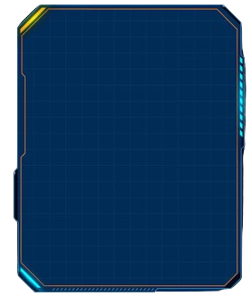
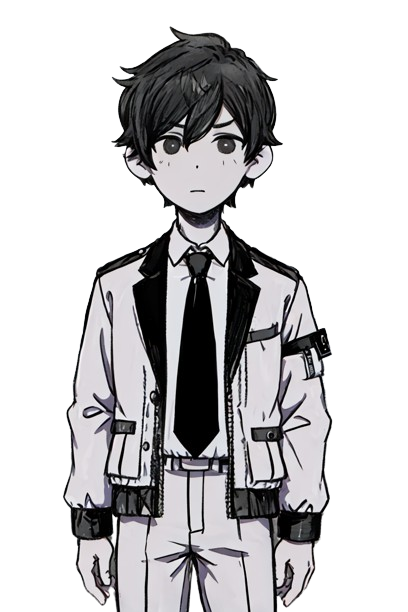
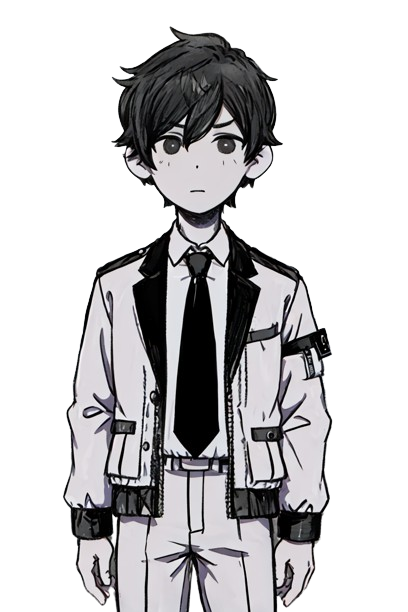
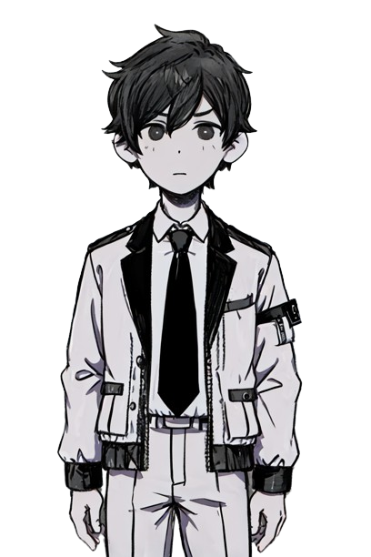

Future of using AI Generated Art



 


This is John
John is an artist and a game developer.
He is currently attending school
This is John
John is an artist and a game developer.
He is currently attending school